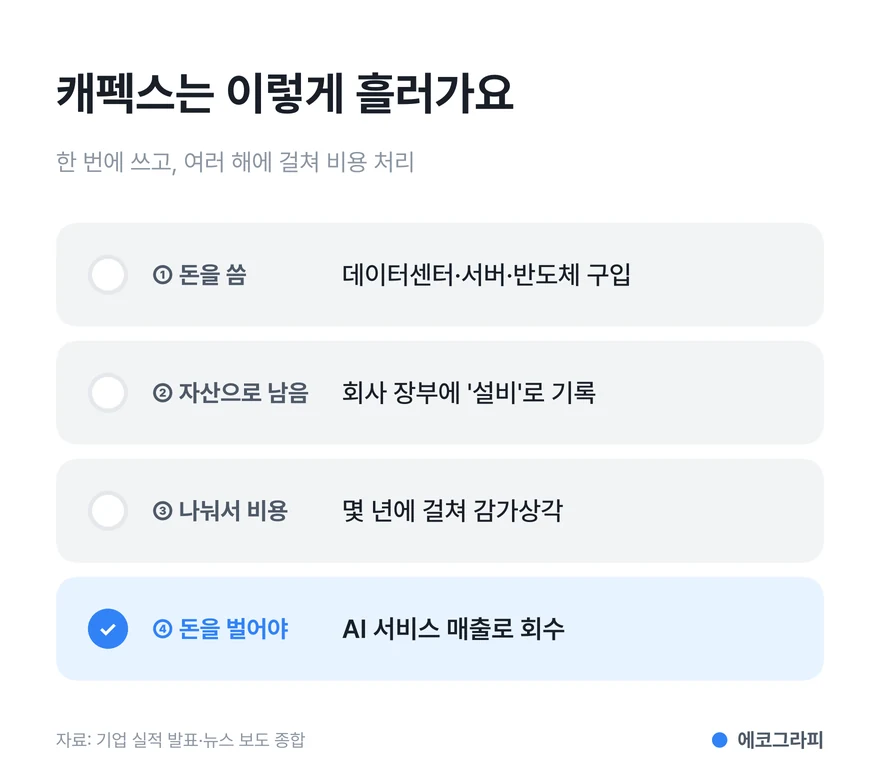
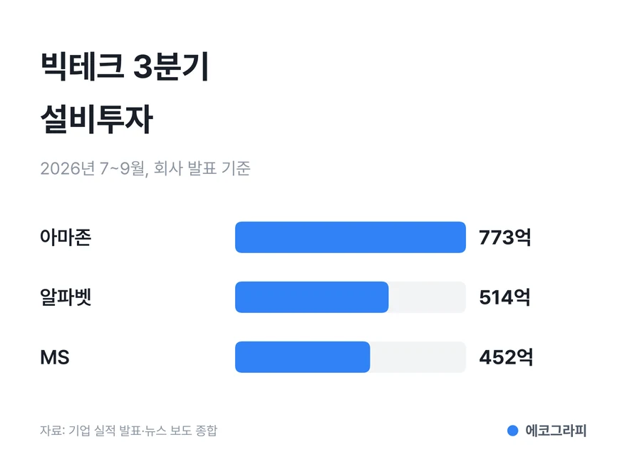
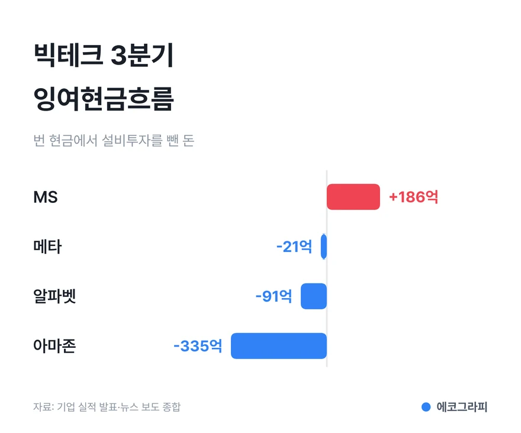
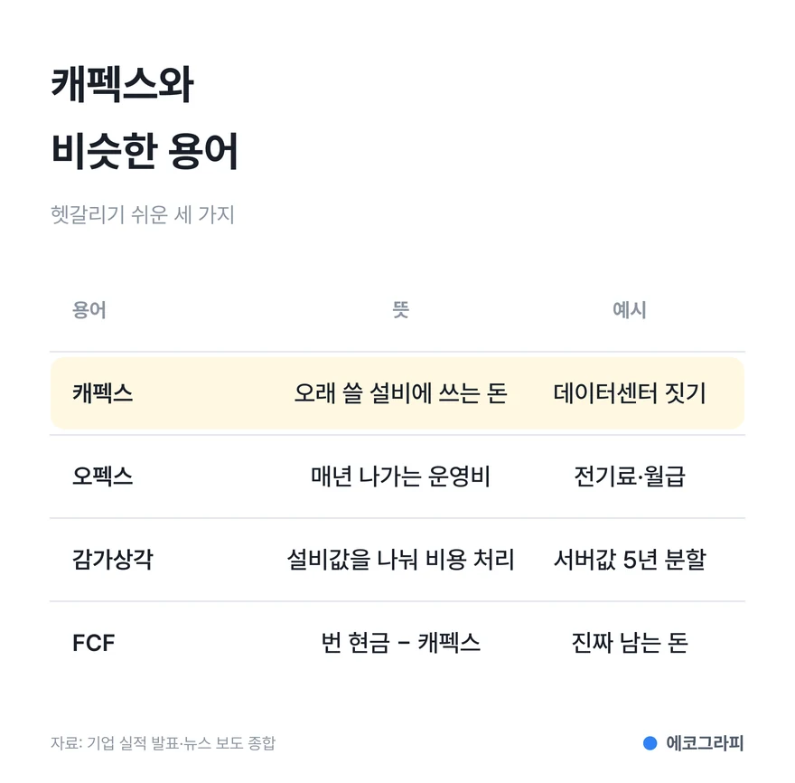

엔비디아가 시장 예상을 넘는 실적을 냈는데도 18일(현지) 주가는 2.89% 내렸어요. 기사에서는 그 이유로 "AI 투자 수익에 대한 의문과 막대한 설비투자·부채 조달 부담"을 꼽았어요. 여기서 말하는 설비투자가 바로 캐펙스예요. 어제 시장 흐름은 오늘 아침 시황에 정리했어요.
캐펙스(CAPEX, Capital Expenditure): 회사가 건물·기계·장비처럼 오래 쓸 자산을 사거나 고치는 데 쓰는 돈이에요.
빵집으로 생각해 보면 쉬워요. 밀가루와 전기료는 매달 나가는 운영비예요. 반면 새 오븐을 사는 건 몇 년 동안 쓸 물건이라 캐펙스예요. 오븐값은 한 번에 내지만, 장부에는 쓰는 기간에 맞춰 조금씩 비용으로 나눠 적어요. 이걸 감가상각이라고 해요.

캐펙스를 늘린다는 건 "앞으로 더 많이 팔 수 있다"고 보고 미리 투자한다는 뜻이에요. 그 투자가 매출로 돌아오면 좋은 투자, 그렇지 못하면 짐이 돼요.
요즘 캐펙스가 뉴스에 자주 나오는 건 빅테크가 AI 데이터센터에 엄청난 돈을 쓰고 있어서예요. 올해 3분기(7~9월) 한 분기에만 아마존은 약 773억 달러, 알파벳은 514억 달러, 마이크로소프트는 452억 달러를 설비에 썼어요.

쓰는 돈이 커지자 잉여현금흐름(FCF)이 마이너스로 돌아선 회사가 늘었어요. 잉여현금흐름은 사업으로 번 현금에서 설비투자를 뺀, 회사에 진짜 남는 돈이에요. 3분기엔 4개 회사 중 마이크로소프트만 플러스였고, 4개 회사를 합치면 약 260억 달러 적자였어요. 1년 전엔 약 620억 달러 흑자였어요.

기억할 것: 캐펙스는 미래를 위해 오늘 쓰는 돈이에요. 많이 쓰는 게 무조건 좋거나 나쁜 게 아니라, 그 돈이 나중에 얼마나 벌어다 주는지가 핵심이에요.

캐펙스와 짝을 이루는 말이 오펙스(OPEX, 운영비)예요. 매년 반복해서 나가는 월급·전기료·임대료 같은 돈이에요. 캐펙스는 한 번 크게 쓰고 오래 쓰는 돈, 오펙스는 매번 나가는 돈이라고 기억하면 돼요.
정해져 있지 않아요. 투자가 매출로 이어질 거라고 믿으면 오르기도 하고, 돈만 쓰고 회수가 늦을 거라고 보면 내리기도 해요. 그래서 시장은 캐펙스와 함께 매출 성장 속도를 같이 봐요.
오래 쓸 설비값을 산 해에 한꺼번에 비용으로 잡으면 그해 이익이 지나치게 작아 보여요. 쓰는 기간에 나눠 적어야 회사가 해마다 얼마를 버는지 제대로 보여요.
꼭 그렇진 않아요. 성장하려고 크게 투자하는 시기엔 잠깐 마이너스가 될 수 있어요. 다만 그 상태가 오래가거나 빚이 빠르게 늘면 조심해서 봐야 해요.
회사 실적 발표 자료의 현금흐름표에서 '유형자산 취득' 같은 항목으로 볼 수 있어요. 뉴스에서는 보통 '자본지출'이나 '설비투자'라고 써요.
※ 2026년 11월 기준으로 정리한 글입니다. 세율·제도는 바뀔 수 있으니 거래 전 증권사·국세청 안내를 한 번 더 확인하세요. 특정 종목·상품의 매수·매도 권유가 아닙니다.